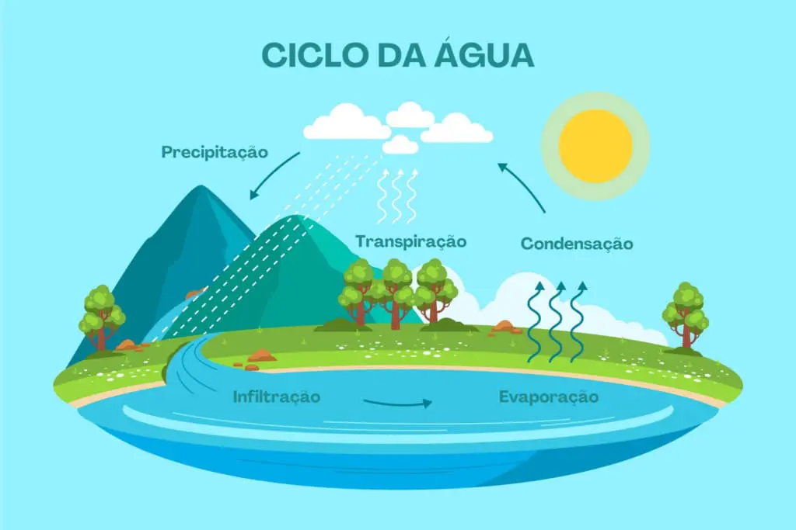
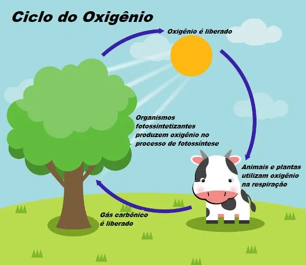
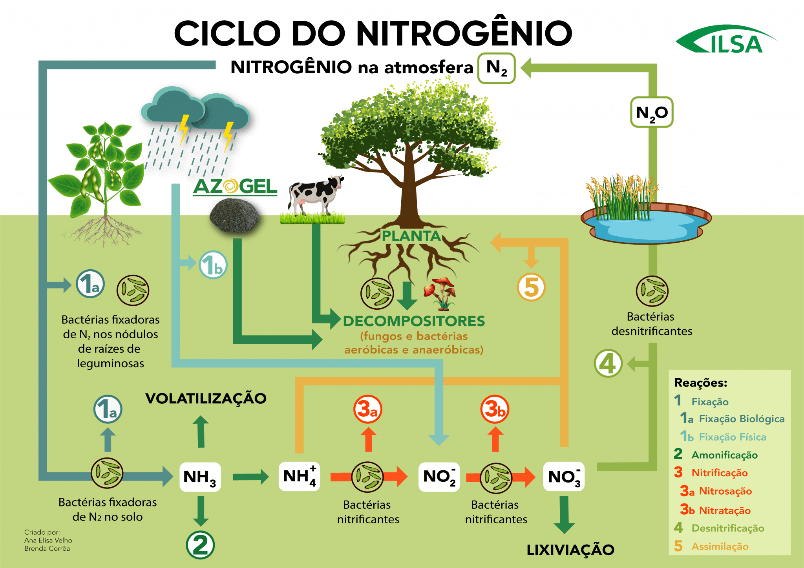

Ciclos Biogeoquímicos
Ciclo da Água
O ciclo da água é o processo contínuo de movimentação da água na Terra, envolvendo várias etapas, desde a evaporação até a precipitação. Existem diferentes tipos de ciclos da água, como o ciclo pequeno, grande e os rios voadores.
Pequeno Ciclo da Água
O pequeno ciclo da água ocorre em uma área limitada. Ele envolve:
- Evaporação: A água dos rios, lagos e oceanos evapora devido ao calor do sol.
- Precipitação: A água evapora e forma nuvens, que depois retornam à superfície como chuva.
Este ciclo é essencial para a renovação da água nas regiões próximas às fontes de água (como rios e lagos).
Grande Ciclo da Água
O grande ciclo da água é mais complexo e inclui o ciclo pequeno, mas com a adição de mais fontes de evaporação:
- Evaporação de plantas (transpiração): A água também evapora das plantas por um processo chamado transpiração.
- Evaporação de animais: A água evapora dos corpos de animais (respiração e suor).
- Escape: A água pode ser perdida para a atmosfera através da evaporação e da transpiração de organismos.
Este ciclo é responsável pela circulação da água em uma escala muito maior, envolvendo oceanos, rios e atmosferas em grande escala.
Rios Voadores
Os rios voadores referem-se à evaporação da água em uma área, que é transportada para outra região, onde ocorre a precipitação. Um exemplo disso é a evaporação da água na Amazônia, que forma nuvens que viajam para o sul do Brasil, onde ocorre a precipitação.
Esse fenômeno tem grande importância para o clima, especialmente em regiões que dependem dessa água para manter seus ecossistemas e abastecimento de água.
Ciclo do Carbono
O ciclo do carbono descreve como o carbono se move entre os diferentes reservatórios na Terra, incluindo a atmosfera, os organismos vivos e o solo. O carbono é um elemento essencial para a vida e está presente em várias formas, como dióxido de carbono (CO₂), glicose e combustíveis fósseis.
Processos no Ciclo do Carbono
O ciclo do carbono envolve diversos processos naturais, incluindo:
- Fotossíntese: As plantas capturam o dióxido de carbono da atmosfera e, utilizando a energia solar, convertem-no em oxigênio e glicose.
- Respiração: Tanto as plantas quanto os animais respiram, liberando dióxido de carbono de volta para a atmosfera.
- Decomposição: Quando plantas e animais morrem, os decompositores (bactérias e fungos) quebram seus corpos e liberam carbono na forma de dióxido de carbono ou metano, que retorna à atmosfera ou ao solo.
Sequestro de Carbono
O carbono pode ser armazenado por longos períodos no solo. Quando plantas e animais morrem, seu carbono se transforma em matéria orgânica no solo. Com o tempo, essa matéria pode se transformar em combustíveis fósseis, como petróleo e gás natural, que são fontes de carbono armazenado.
Petróleo e Gás Natural
O petróleo e o gás natural são exemplos de carbono sequestrado por milhões de anos. Quando plantas e animais marinhos morrem e se acumulam no fundo dos oceanos, sua matéria orgânica é enterrada por camadas de sedimentos. Com o tempo e sob pressão, essa matéria se transforma em petróleo e gás natural, armazenando grandes quantidades de carbono. A extração desses recursos fósseis para consumo humano libera novamente o carbono na forma de dióxido de carbono (CO₂) para a atmosfera, contribuindo para o aquecimento global.
Importância da Decomposição
A decomposição é um processo crucial, pois além de liberar carbono de volta ao ambiente, também nutre o solo, tornando-o mais fértil para o crescimento de novas plantas. Isso fecha o ciclo, permitindo que o carbono continue a ser reciclado entre os diferentes reservatórios da Terra.

Ciclo do Oxigênio
O ciclo do oxigênio está intimamente relacionado aos ciclos da água e do carbono, pois todos esses ciclos compartilham a presença do oxigênio (O). O oxigênio é essencial para a respiração dos seres vivos e também faz parte da fotossíntese realizada pelas plantas.
Processos no Ciclo do Oxigênio
O oxigênio é trocado entre a atmosfera, os organismos vivos e o solo em vários processos naturais:
- Fotossíntese: As plantas e outros organismos fotossintetizantes (como algas e fitoplânctons) absorvem dióxido de carbono (CO₂) da atmosfera e, utilizando a luz solar, produzem oxigênio (O₂) como subproduto. Esse oxigênio é liberado na atmosfera e é essencial para a respiração de animais e plantas.
- Respiração: Os animais e as plantas consomem oxigênio para a respiração celular, um processo que quebra a glicose para liberar energia. Durante a respiração, o oxigênio é transformado em dióxido de carbono (CO₂), que é liberado de volta para a atmosfera.
- Decomposição: Quando organismos morrem, a decomposição de sua matéria orgânica também consome oxigênio e libera dióxido de carbono (CO₂) na atmosfera.
Relação com o Ciclo da Água e do Carbono
O ciclo do oxigênio está presente tanto no ciclo da água quanto no ciclo do carbono, pois ambos envolvem a troca de gases que contêm oxigênio.
- Ciclo da Água: A água contém oxigênio, e a evaporação da água, juntamente com a transpiração das plantas, liberam vapor de água na atmosfera. Quando a água evapora de plantas e animais, o oxigênio também é liberado.
- Ciclo do Carbono: O oxigênio é crucial no ciclo do carbono, pois as plantas utilizam o CO₂ para a fotossíntese e liberam oxigênio, que será utilizado na respiração de animais e plantas, fechando o ciclo de carbono e oxigênio.
Importância do Ciclo do Oxigênio
O oxigênio é fundamental para a vida na Terra. A fotossíntese é a principal maneira de produção de oxigênio, enquanto a respiração e a decomposição garantem que o oxigênio seja reciclado constantemente. Esse ciclo contínuo mantém a quantidade de oxigênio na atmosfera em equilíbrio e é vital para os ecossistemas e a sobrevivência dos seres vivos.
Ciclo do Nitrogênio
O nitrogênio é um elemento essencial para a vida na Terra, sendo componente de moléculas como proteínas, ácidos nucleicos (DNA e RNA) e outras biomoléculas vitais para os seres vivos. Embora o nitrogênio seja abundante na atmosfera, com cerca de 78% do ar sendo composto por gás nitrogênio (N₂), ele não é diretamente utilizável por plantas e animais. O ciclo do nitrogênio é o processo natural pelo qual o nitrogênio é convertido em formas que os organismos podem usar, e depois retornando à atmosfera. Abaixo estão as etapas detalhadas desse ciclo fundamental.
1. Fixação do Nitrogênio
O primeiro passo do ciclo do nitrogênio é a fixação do nitrogênio. Nesse processo, o gás nitrogênio (N₂) presente na atmosfera é convertido em compostos utilizáveis, como amônia (NH₃) ou íons amônio (NH₄⁺). Isso ocorre de duas formas principais:
- Fixação biológica: Algumas bactérias e cianobactérias, como as que vivem em simbiose com plantas leguminosas (feijão, soja, etc.), possuem a enzima nitrogenase, que facilita a conversão do N₂ em amônia. Essas bactérias são chamadas de bactérias fixadoras de nitrogênio. Elas convertem o nitrogênio atmosférico em formas que as plantas podem utilizar diretamente.
- Fixação abiológica: O nitrogênio também pode ser fixado através de processos naturais não biológicos, como os raios, que podem quebrar as moléculas de N₂ da atmosfera, permitindo que o nitrogênio reaja com o oxigênio e forme óxidos de nitrogênio (NOₓ), que depois são dissolvidos na água da chuva e chegam ao solo.
O resultado da fixação do nitrogênio é a produção de amônia (NH₃) ou íons amônio (NH₄⁺), que podem ser usados pelas plantas para a síntese de proteínas e outros compostos vitais.
2. Amonificação
A amonificação é o processo pelo qual o nitrogênio orgânico presente em resíduos orgânicos (como fezes de animais, plantas mortas e outros restos biológicos) é transformado em amônia ou íons amônio. Isso ocorre por meio da ação de decompositores, como bactérias e fungos que quebram a matéria orgânica.
Quando plantas e animais morrem, ou quando excretam resíduos nitrogenados (como uréia ou ácido úrico), as bactérias decompositoras realizam a amonificação, liberando amônia no solo. O processo de amonificação é crucial, pois transforma o nitrogênio orgânico, que não pode ser diretamente aproveitado pelas plantas, em uma forma que pode ser facilmente absorvida.
3. Nitrificação
A nitrificação é um processo bacteriano aeróbico, ou seja, que ocorre na presença de oxigênio. Ela transforma a amônia ou íons amônio (NH₄⁺) em nitrito (NO₂⁻) e, em seguida, em nitrato (NO₃⁻), uma forma de nitrogênio que as plantas conseguem absorver. A nitrificação ocorre em duas etapas:
- Primeira etapa: A amônia (NH₃) é convertida em nitrito (NO₂⁻) pelas bactérias do gênero Nitrosomonas.
- Segunda etapa: O nitrito (NO₂⁻) é então oxidado a nitrato (NO₃⁻) pelas bactérias do gênero Nitrobacter.
O nitrato (NO₃⁻) é a forma de nitrogênio mais comum e disponível para as plantas, sendo absorvido pelas raízes das plantas para sintetizar proteínas e outras substâncias necessárias para o crescimento.
4. Absorção de Nitrato pelas Plantas
As plantas absorvem o nitrato (NO₃⁻) do solo por meio das raízes. O nitrato absorvido é utilizado pelas plantas para formar aminoácidos, proteínas e outros compostos nitrogenados essenciais para o seu crescimento e reprodução. Esse nitrogênio é, então, incorporado nas estruturas vegetais. Animais que se alimentam dessas plantas, ou de outros animais que ingeriram plantas, obtêm o nitrogênio necessário para suas próprias proteínas.
5. Decomposição e Liberação de Nitrogênio
Quando as plantas e os animais morrem, seus corpos são decompostos por bactérias e fungos decompositores. Durante esse processo, o nitrogênio orgânico presente em seus corpos é transformado em amônia (NH₃) por meio da amonificação. Esse nitrogênio orgânico então retorna ao solo, completando o ciclo.
6. Desnitrificação
A desnitrificação é o processo pelo qual o nitrato (NO₃⁻), acumulado no solo, é convertido de volta em nitrogênio gasoso (N₂) por bactérias desnitrificantes, como Paracoccus denitrificans e Pseudomonas. Esse processo ocorre em condições anaeróbicas (sem oxigênio), como em solos saturados de água.
A desnitrificação fecha o ciclo do nitrogênio, retornando o nitrogênio gasoso para a atmosfera, onde permanece até ser novamente fixado, reiniciando o ciclo.
Importância do Ciclo do Nitrogênio
O ciclo do nitrogênio é vital para a manutenção da vida no planeta. Ele garante que o nitrogênio, essencial para a formação de proteínas e ácidos nucleicos, seja continuamente reciclado e disponibilizado para plantas e animais. Afixação do nitrogênio, a amonificação, a nitrificação e a desnitrificação são processos interligados que mantêm o equilíbrio da disponibilidade de nitrogênio no ambiente.
Além disso, o ciclo do nitrogênio é fundamental para a agricultura, pois as plantas dependem de nitrogênio do solo para crescer. A utilização de fertilizantes nitrogenados, que fornecem nitrato para as plantas, é uma prática comum para aumentar a produtividade agrícola, mas deve ser feita de forma sustentável para evitar impactos ambientais, como a poluição dos corpos d'água e a eutrofização.
Em um ambiente equilibrado, os processos do ciclo do nitrogênio garantem que o nitrogênio esteja sempre disponível para os organismos vivos, permitindo o funcionamento adequado dos ecossistemas terrestres e aquáticos.
Ciclo do Fósforo
O fósforo é um elemento essencial para a vida, presente em estruturas fundamentais como os ossos e dentes dos animais, além de ser parte integrante dos ácidos nucleicos (DNA e RNA) e das moléculas energéticas como o ATP (adenosina trifosfato). Ao contrário de outros ciclos biogeoquímicos, o ciclo do fósforo não envolve a atmosfera, o que o torna único. O fósforo circula principalmente no solo e nos corpos d'água, sendo reciclado através de vários processos naturais. Abaixo está a explicação detalhada de como o fósforo se move no ambiente e nas cadeias alimentares.
Erosão das Rochas
O ciclo do fósforo começa com a liberação do fósforo a partir da erosão de rochas contendo minerais fosfatados. Esses minerais são compostos de fosfato (PO₄³⁻) que, ao longo do tempo, se desgastam devido à ação da água, vento e outros fatores naturais, liberando fósforo no solo e na água. Esse fósforo pode ser absorvido diretamente pelas plantas ou ir para os corpos d'água próximos.
Absorção pelas Plantas
O fósforo liberado pelas rochas vai para o solo, onde se torna disponível para as plantas. As plantas absorvem o fosfato do solo por meio das raízes e utilizam-no para formar moléculas essenciais, como os ácidos nucleicos e o ATP, que são necessários para o crescimento e desenvolvimento delas.
Transferência para os Animais
Quando os animais se alimentam das plantas, o fósforo é transferido para eles. Esse fósforo é utilizado no corpo dos animais para formar seus ossos, dentes e outras estruturas celulares importantes. Assim, o fósforo faz parte da alimentação das cadeias alimentares, garantindo o bom funcionamento do metabolismo de vários organismos.
Decomposição e Liberação de Fósforo
Quando os organismos morrem, o fósforo presente em seus corpos é liberado de volta ao solo e aos corpos d'água durante a decomposição. Organismos decompositores, como bactérias e fungos, quebram a matéria orgânica, liberando o fósforo para o ambiente novamente. Este fósforo pode ser absorvido por novas plantas ou seguir para os corpos d'água, onde pode se acumular no fundo